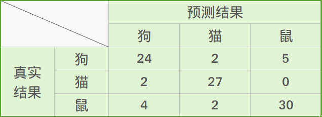
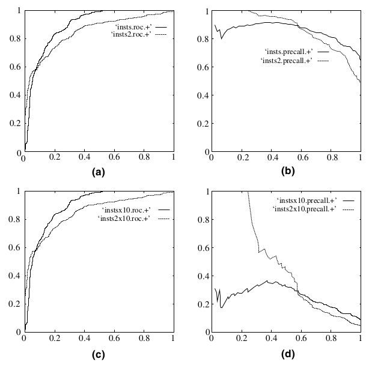

在分类任务中，人们总是喜欢基于错误率来衡量分类器任务的成功程度。错误率指的是在所有测试样例中错分的样例比例。实际上，这样的度量错误掩盖了样例如何被分错的事实。在机器学习中，有一个普遍适用的称为混淆矩阵(confusion matrix)的工具，它可以帮助人们更好地了解分类中的错误。
比如有这样一个在房子周围可能发现的动物类型的预测，这个预测的三类问题的混淆矩阵如下表所示：

利用混淆矩阵可以充分理解分类中的错误了。如果混淆矩阵中的非对角线元素均为0，就会得到一个近乎完美的分类器。
在接下来的讨论中，将以经典的二分类问题为例，对于多分类类比推断。
二分类问题在机器学习中是一个很常见的问题，经常会用到。ROC (Receiver Operating Characteristic) 曲线和 AUC (Area Under the Curve) 值常被用来评价一个二值分类器 (binary classifier) 的优劣。之前做医学图像计算机辅助肺结节检测时，在评定模型预测结果时，就用到了ROC和AUC，这里简单介绍一下它们的特点，以及更为深入地，讨论如何作出ROC曲线图和计算AUC值。
一、医学图像识别二分类问题
针对一个二分类问题，我们将实例分成正类(positive)和负类(negative)两种。
例如：在肺结节计算机辅助识别这一问题上，一幅肺部CT图像中有肺结节被认为是阳性(positive)，没有肺结节被认为是阴性(negative)。对于部分有肺结节的示意图如下：

所以在实际检测时，就会有如下四种情况：
(1) 真阳性(True Positive，TP)：检测有结节，且实际有结节；正确肯定的匹配数目；
(2) 假阳性(False Positive，FP)：检测有结节，但实际无结节；误报，给出的匹配是不正确的；
(3) 真阴性(True Negative，TN)：检测无结节，且实际无结节；正确拒绝的非匹配数目；
(4) 假阴性(False Negative，FN)：检测无结节，但实际有结节；漏报，没有正确找到的匹配的数目。
详细图解（原创，转载请标明出处）如下：

上图中涉及到很多相关概念及参数，详细请见Wiki上的定义及其混淆矩阵。

这里整理肺结节识别中的几个主要参数指标如下：
- 正确率(Precision)：
$$ Precision=\dfrac{TP}{TP+FP} $$
- 真阳性率(True Positive Rate，TPR)，灵敏度(Sensitivity)，召回率(Recall)：
$$ Sensitivity=Recall=TPR=\dfrac{TP}{TP+FN} $$
- 真阴性率(True Negative Rate，TNR)，特异度(Specificity)：
$$ Specificity=TNR=\dfrac{TN}{FP+TN} $$
- 假阴性率(False Negatice Rate，FNR)，漏诊率( = 1 - 灵敏度)：
$$ FNR=\dfrac{FN}{TP+FN} $$
- 假阳性率(False Positice Rate，FPR)，误诊率( = 1 - 特异度)：
$$ FPR=\dfrac{FP}{FP+TN} $$
- 阳性似然比(Positive Likelihood Ratio (LR+))：
$$ LR+ = \dfrac{TPR}{FPR} = \dfrac{Sensitivity}{1-Specificity} $$
- 阴性似然比(Negative Likelihood Ratio (LR−) )：
$$ LR- = \dfrac{FNR}{TNR} = \dfrac{1-Sensitivity}{Specificity} $$
- Youden指数(Youden index)：
$$ \text{Youden index} = Sensitivity + Specificity - 1 = TPR - FPR $$
二、ROC曲线
ROC曲线：接收者操作特征曲线(receiver operating characteristic curve)，是反映敏感性和特异性连续变量的综合指标，roc曲线上每个点反映着对同一信号刺激的感受性。
对于分类器或者说分类算法，评价指标主要有precision，recall，F1 score等，以及这里要讨论的ROC和AUC。下图是一个ROC曲线的示例：

- 横坐标：Sensitivity，伪正类率(False positive rate， FPR)，预测为正但实际为负的样本占所有负例样本 的比例；
- 纵坐标：1-Specificity，真正类率(True positive rate， TPR)，预测为正且实际为正的样本占所有正例样本 的比例。
在一个二分类模型中，假设采用逻辑回归分类器，其给出针对每个实例为正类的概率，那么通过设定一个阈值如0.6，概率大于等于0.6的为正类，小于0.6的为负类。对应的就可以算出一组(FPR,TPR)，在平面中得到对应坐标点。随着阈值的逐渐减小，越来越多的实例被划分为正类，但是这些正类中同样也掺杂着真正的负实例，即TPR和FPR会同时增大。阈值最大时，对应坐标点为(0,0)，阈值最小时，对应坐标点(1,1)。
如下面这幅图，(a)图中实线为ROC曲线，线上每个点对应一个阈值。

(a) 理想情况下，TPR应该接近1，FPR应该接近0。ROC曲线上的每一个点对应于一个threshold，对于一个分类器，每个threshold下会有一个TPR和FPR。比如Threshold最大时，TP=FP=0，对应于原点；Threshold最小时，TN=FN=0，对应于右上角的点(1,1)。
(b) P和N得分不作为特征间距离d的一个函数，随着阈值theta增加，TP和FP都增加。
- 横轴FPR：1-TNR，1-Specificity，FPR越大，预测正类中实际负类越多。
- 纵轴TPR：Sensitivity(正类覆盖率)，TPR越大，预测正类中实际正类越多。
- 理想目标：TPR=1，FPR=0，即图中(0,1)点，故ROC曲线越靠拢(0,1)点，越偏离45度对角线越好，Sensitivity、Specificity越大效果越好。
随着阈值threshold调整，ROC坐标系里的点如何移动可以参考：

三、如何画ROC曲线
对于一个特定的分类器和测试数据集，显然只能得到一个分类结果，即一组FPR和TPR结果，而要得到一个曲线，我们实际上需要一系列FPR和TPR的值，这又是如何得到的呢？我们先来看一下Wikipedia上对ROC曲线的定义：
In signal detection theory, a receiver operating characteristic (ROC), or simply ROC curve, is a graphical plot which illustrates the performance of a binary classifier system as its discrimination threshold is varied.
问题在于“as its discrimination threashold is varied”。如何理解这里的“discrimination threashold”呢？我们忽略了分类器的一个重要功能“概率输出”，即表示分类器认为某个样本具有多大的概率属于正样本（或负样本）。通过更深入地了解各个分类器的内部机理，我们总能想办法得到一种概率输出。通常来说，是将一个实数范围通过某个变换映射到(0,1)区间。
假如我们已经得到了所有样本的概率输出（属于正样本的概率），现在的问题是如何改变“discrimination threashold”？我们根据每个测试样本属于正样本的概率值从大到小排序。下图是一个示例，图中共有20个测试样本，“Class”一栏表示每个测试样本真正的标签（p表示正样本，n表示负样本），“Score”表示每个测试样本属于正样本的概率。

接下来，我们从高到低，依次将“Score”值作为阈值threshold，当测试样本属于正样本的概率大于或等于这个threshold时，我们认为它为正样本，否则为负样本。举例来说，对于图中的第4个样本，其“Score”值为0.6，那么样本1，2，3，4都被认为是正样本，因为它们的“Score”值都大于等于0.6，而其他样本则都认为是负样本。每次选取一个不同的threshold，我们就可以得到一组FPR和TPR，即ROC曲线上的一点。这样一来，我们一共得到了20组FPR和TPR的值，将它们画在ROC曲线的结果如下图：

当我们将threshold设置为1和0时，分别可以得到ROC曲线上的(0,0)和(1,1)两个点。将这些(FPR,TPR)对连接起来，就得到了ROC曲线。当threshold取值越多，ROC曲线越平滑。
其实，我们并不一定要得到每个测试样本是正样本的概率值，只要得到这个分类器对该测试样本的“评分值”即可（评分值并不一定在(0,1)区间）。评分越高，表示分类器越肯定地认为这个测试样本是正样本，而且同时使用各个评分值作为threshold。我认为将评分值转化为概率更易于理解一些。
四、AUC
AUC值的计算
AUC (Area Under Curve) 被定义为ROC曲线下的面积，显然这个面积的数值不会大于1。又由于ROC曲线一般都处于y=x这条直线的上方，所以AUC的取值范围一般在0.5和1之间。使用AUC值作为评价标准是因为很多时候ROC曲线并不能清晰的说明哪个分类器的效果更好，而作为一个数值，对应AUC更大的分类器效果更好。
AUC的计算有两种方式，梯形法和ROC AUCH法，都是以逼近法求近似值，具体见wikipedia。
AUC意味着什么
那么AUC值的含义是什么呢？根据(Fawcett, 2006)，AUC的值的含义是：
The AUC value is equivalent to the probability that a randomly chosen positive example is ranked higher than a randomly chosen negative example.
这句话有些绕，我尝试解释一下：首先AUC值是一个概率值，当你随机挑选一个正样本以及一个负样本，当前的分类算法根据计算得到的Score值将这个正样本排在负样本前面的概率就是AUC值。当然，AUC值越大，当前的分类算法越有可能将正样本排在负样本前面，即能够更好的分类。
从AUC判断分类器（预测模型）优劣的标准：
- AUC = 1，是完美分类器，采用这个预测模型时，存在至少一个阈值能得出完美预测。绝大多数预测的场合，不存在完美分类器。
- 0.5 < AUC < 1，优于随机猜测。这个分类器（模型）妥善设定阈值的话，能有预测价值。
- AUC = 0.5，跟随机猜测一样（例：丢铜板），模型没有预测价值。
- AUC < 0.5，比随机猜测还差；但只要总是反预测而行，就优于随机猜测。
三种AUC值示例：

简单说：AUC值越大的分类器，正确率越高。
为什么使用ROC曲线
既然已经这么多评价标准，为什么还要使用ROC和AUC呢？因为ROC曲线有个很好的特性：当测试集中的正负样本的分布变化的时候，ROC曲线能够保持不变。在实际的数据集中经常会出现类不平衡(class imbalance)现象，即负样本比正样本多很多(或者相反)，而且测试数据中的正负样本的分布也可能随着时间变化。下图是ROC曲线和Precision-Recall曲线的对比：

在上图中，(a)和(c)为ROC曲线，(b)和(d)为Precision-Recall曲线。(a)和(b)展示的是分类其在原始测试集(正负样本分布平衡)的结果，(c)和(d)是将测试集中负样本的数量增加到原来的10倍后，分类器的结果。可以明显的看出，ROC曲线基本保持原貌，而Precision-Recall曲线则变化较大。
Reference
- Wikipedia：Receiver operating characteristic
- 孔明的博客：ROC和AUC介绍以及如何计算AUC
- Rachel Zhang的专栏(CSDN)：ROC曲线-阈值评价标准
- 博客园dzl_ML：机器学习之分类器性能指标之ROC曲线、AUC值
- 知乎：精确率、召回率、F1 值、ROC、AUC 各自的优缺点是什么？
（在此对以上博文的博主表示感谢！）
写在最后：转载请联系作者并注明出处，谢谢！